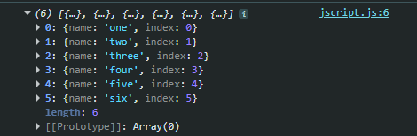
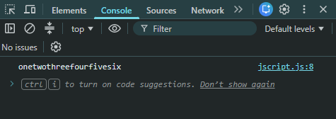
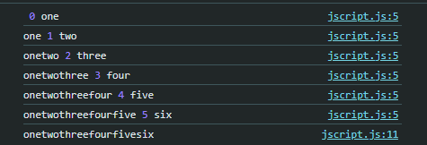

Reduce
Introdução
Agora iremos conhecer outro método de iteração, que possui um funcionamento diferente dos métodos que vimos anteriormente.
Agora iremos conhecer outro método de iteração, que possui um funcionamento diferente dos métodos que vimos anteriormente.
JS:

Para começar, teremos o seguinte código de exemplo:
const words = ['one', 'two', 'three', 'four', 'five', 'six'];
const result = words.map((word, index) => ({ name: word, index }));
Feito isso, transformamos nosso array em um array de objetos:

Podemos observar que cada objeto possui um nome e um índice.
Agora, suponha que queremos criar um objeto onde a chave será a palavra e o valor será o comprimento dessa palavra. Nesse caso, nosso resultado final não será um array, mas sim um objeto contendo todos os elementos.
Para situações em que precisamos realizar uma agregação, como somar valores, calcular uma média, concatenar strings ou construir um objeto, podemos utilizar o método reduce.
O método reduce recebe uma função callback como parâmetro. Seus argumentos são um pouco diferentes dos métodos que vimos anteriormente.
Para entendermos melhor, podemos escrever o callback separadamente:
O primeiro parâmetro representa o acumulador, ou seja, o resultado produzido pelas iterações anteriores.
O segundo parâmetro representa o elemento atual do array.
O terceiro parâmetro representa o índice do elemento atual e o quarto representa o próprio array.
const result = words
.reduce((prev, item, index, items) => {})
O prev representa o valor acumulado até aquele momento. Também podemos definir um valor inicial para o acumulador passando um segundo argumento para o reduce.
const result = words
.reduce((prev, item, index, items) => {}, '')
Nesse caso, passamos uma string vazia como valor inicial do acumulador.
Agora podemos utilizar o return para informar qual será o novo valor do acumulador:
const result = words
.reduce((prev, item, index, items) => { return prev + item;
}, '')
Como resultado final, teremos:

Teremos como resultado a concatenação de todas as palavras.
Para analisarmos melhor o funcionamento, podemos utilizar console.log para observar os valores durante cada iteração:
const result = words
.reduce((prev, item, index) => {
console.log(prev, item, index);
return prev + item;
}, '')

No início, o valor de prev é a string vazia, pois definimos '' como valor inicial.
Na primeira iteração, temos: prev = '' e item = 'one'. Então o return faz: '' + 'one'.
O resultado dessa operação passa a ser o novo valor de prev na próxima iteração.
Na próxima iteração teremos: prev = 'one' e item = 'two'. O resultado será 'onetwo'.
Esse processo continua até que todos os elementos do array tenham sido percorridos.
Portanto, o método reduce permite realizar uma agregação. No nosso exemplo, estamos fazendo uma concatenação.
Como não precisamos do índice nem do array original, podemos utilizar somente prev e item:
Podemos também deixar o código mais curto utilizando o retorno implícito:
const result = words .reduce((prev, item) => prev + item, '')
Dessa vez, em vez dos elementos, iremos concatenar os índices.
const result = words .reduce((prev, item, index) => prev + index, '')
Dessa forma, teremos a concatenação dos índices. O resultado será uma string contendo os índices 012345.
Se tivéssemos, em vez de uma string vazia, um valor inicial igual a 0, poderíamos utilizar o reduce para realizar uma soma:
const result = words
.reduce((prev, item, index) => prev + index, 0)
Nesse caso, começamos com 0 e adicionamos cada índice ao acumulador.
Agora iremos utilizar o reduce para construir um objeto.
A cada iteração, iremos manter todas as propriedades que já existem no objeto prev e adicionar uma nova propriedade. A chave será o valor de item e o valor dessa chave será o índice.
Para isso, podemos utilizar o spread operator (...) para copiar as propriedades existentes em prev. Depois, utilizamos [item] para criar uma propriedade cujo nome será definido dinamicamente:
const result = words
.reduce((prev, item, i) => {
return { ...prev, [item]: i };
}, {});
O {...prev} copia todas as propriedades que já foram adicionadas ao objeto acumulador.
Já o [item] indica que estamos utilizando o valor de item como o nome da propriedade.
Por exemplo, na primeira iteração, temos:
item = 'one'
i = 0
Então será criado:
{ one: 0 }
Na próxima iteração, item será 'two' e o índice será 1. O objeto anterior será mantido e uma nova propriedade será adicionada:
{ one: 0, two: 1 }
Esse processo continua até que todos os elementos do array tenham sido percorridos.
Dessa forma, o resultado final será:
{
one: 0,
two: 1,
three: 2,
four: 3,
five: 4,
six: 5
}
Importante: como estamos acumulando um objeto, o valor inicial do reduce deve ser um objeto vazio {}, e não uma string vazia ''.
Uma maneira simples de entender o reduce é pensar nele como uma variável que vai acumulando um resultado a cada volta do loop.
valor inicial ↓ reduce ↓ acumulador + elemento ↓ novo acumulador ↓ acumulador + próximo elemento ↓ resultado final
Diferentemente do map e do filter, que normalmente retornam um novo array, o reduce pode retornar praticamente qualquer tipo de valor: número, string, objeto, array, boolean etc.
O tipo do resultado depende do valor inicial e do que retornamos dentro do callback.
Exemplo: se começarmos com 0, podemos acumular números. Se começarmos com '', podemos concatenar strings. Se começarmos com {}, podemos construir um objeto.
Portanto, a ideia principal é: reduce pega vários valores e os reduz a um único resultado acumulado.